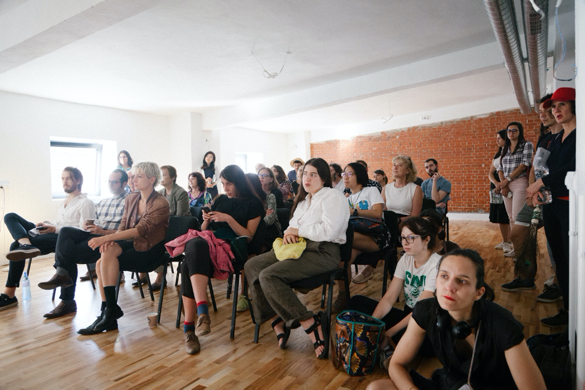
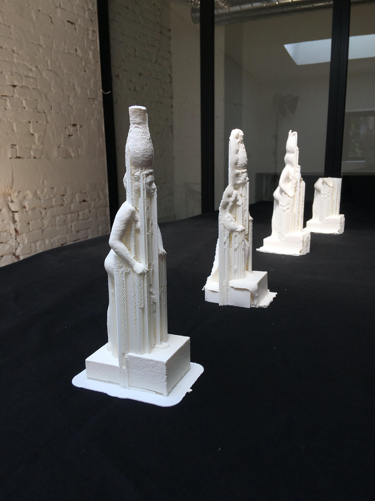
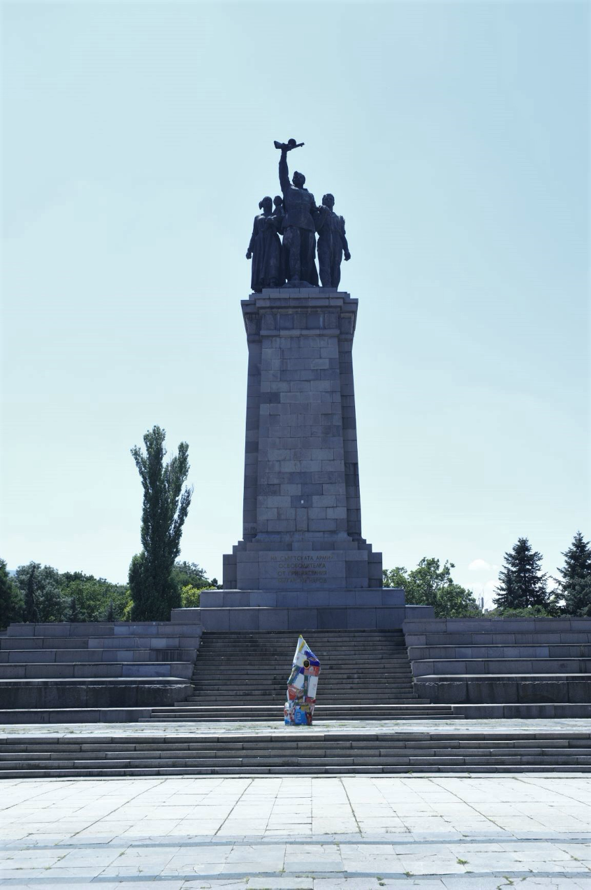

All Rights Reversed
For the purpose of Sofia Art Week 2019, professionals in the field of social sciences, law, art and architecture came together to illustrate the state of copyright laws in Europe and in particular in Bulgaria.

The mission of public institutions, such as galleries and museums, is to make knowledge accessible to all. What will be their communication strategy - how will they make their collections of artworks more accessible to the public? One of the challenges we face today as a society is to preserve our cultural heritage, and one way of doing this is to digitize it so that it could be freely shared. The Museum of Art and Design in Hamburg, Germany, for example, provides its collection for free online. The British Library and the Japanese Center for Asian Historical Archives jointly publish over 200 Japanese and Chinese prints in the public domain. These are examples that set the foundations for our understanding of sharing knowledge globally. What obstacles exist for the development of such activities?
The project consisted of two parts. The first one took place in Resonator, a hub for shared innovation, which aims to promote the cooperation between different creative spheres. Using 3D printing technology and with the help of our audience, we printed a sculpture using photogrammetry software. We conducted a series of lectures and talks, which helped us tackle the issues surrounding the case. With Blagoy Blagoev, we addressed the paradox of openness and how it manifests itself in different spheres of public life - tendencies towards openness are observed, for example in politics (»open government«), in science (»open science«), organizations (»open innovation«), and in the arts and media (»open content«). Dimi Dimitrov focused on issues related to the digitization of cultural heritage, focusing on examples that have led to changes in copyright law. Lidia Atanasova told us in a lecture about different practices in digital fabrication and how it unites digital technologies and physical processes.
The second part of the project took place in a public space of Sofia. We worked with contemporary artists Ivan Moudov (Bulgaria) and Julien Fargetton (France) for the development of public artworks in the urban environment.
Within the framework of All Rights Reversed, the audience was able to get free consultations from Wikimedia, Digital Republic representatives and up-to-date information on the Creative Europe Program – MEDIA sub-program and Culture sub-program.
